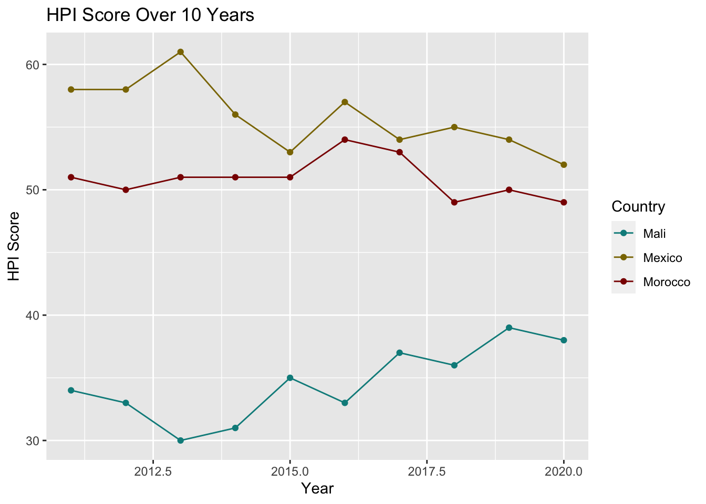
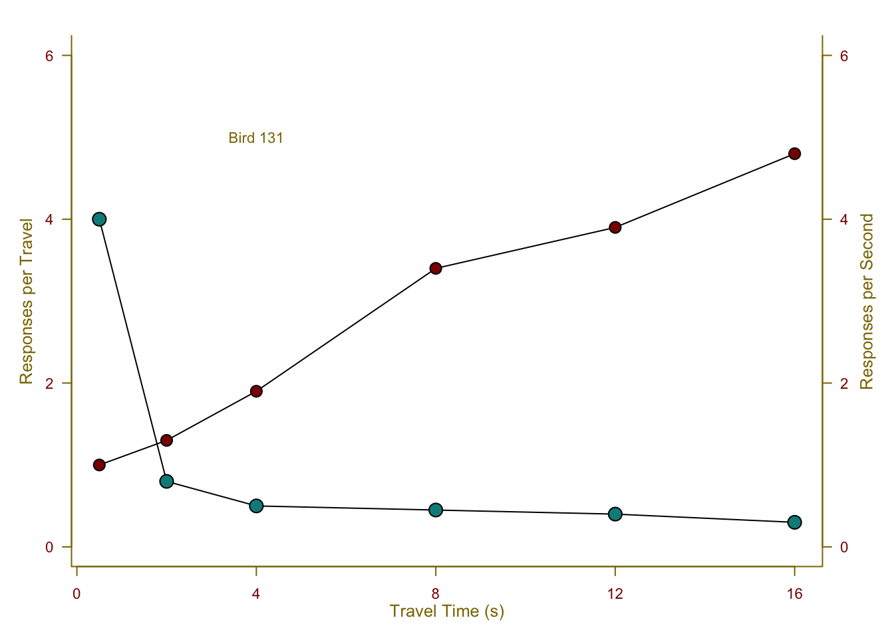
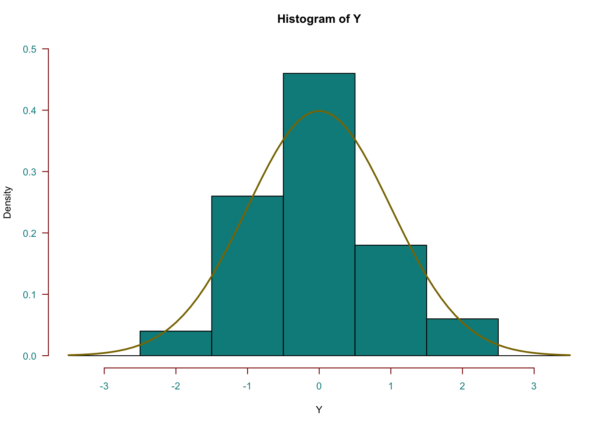
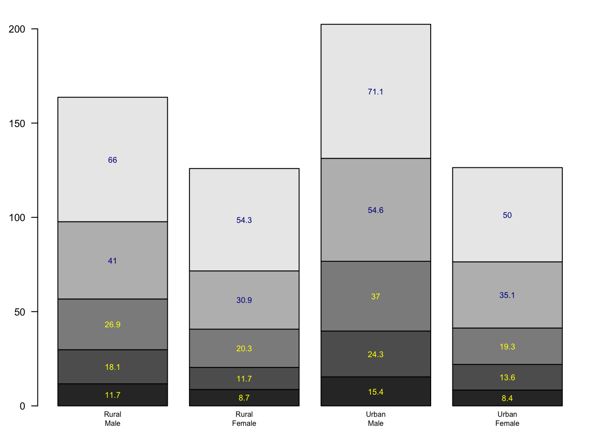
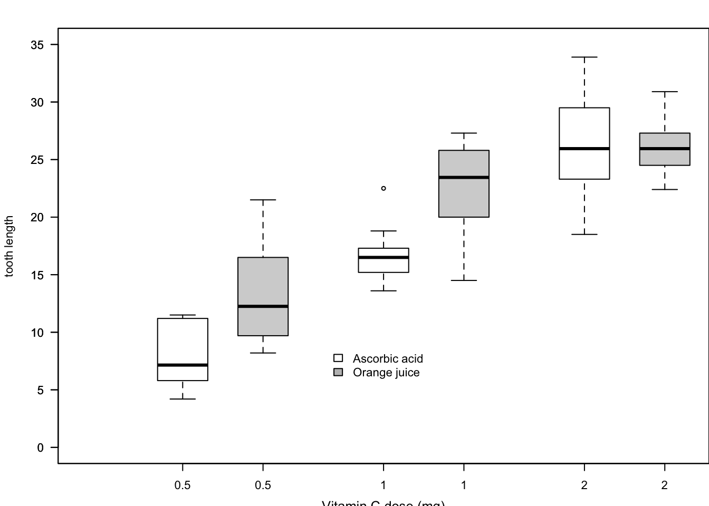
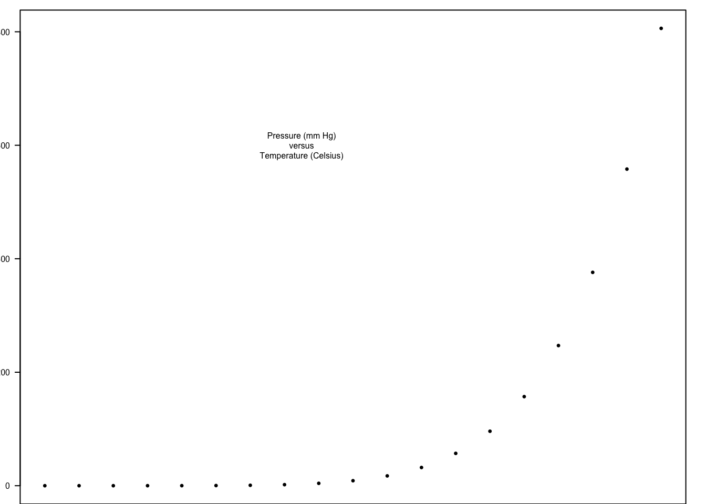

#DATAdata <-data.frame(Year =rep(2011:2020, 3), # Years from 2006 to 2016Country =rep(c("Mali", "Mexico", "Morocco"), each =10), # Country namesHPI =c(34, 33, 30, 31, 35, 33, 37, 36, 39, 38, # Mali58, 58, 61, 56, 53, 57, 54, 55, 54, 52, # Mexico51, 50, 51, 51, 51, 54, 53, 49, 50, 49# Morocco ))#NECCESSARY PACKAGESlibrary(ggplot2)#Creating a Scatter Plotggplot(data, aes(x = Year, y = HPI, color = Country)) +geom_point() +#Add pointsgeom_line() +# Add lineslabs(title ="HPI Score Over 10 Years", x ="Year", y ="HPI Score") +scale_color_manual(values =c("Mali"="cyan4", "Mexico"="gold4", "Morocco"="red4"))

Show Hidden Code
#ggplot(data, aes(x = Year, y = LifeExpectancy, color = Country)) specifies the data frame and the mapping of variables to the x-axis, y-axis, and color aesthetic.#geom_point() adds the points to the plot.#labs() sets the title and axis labels.#scale_color_manual() customizes the colors for each country in the legend.
This is a graph depicting the 10-year trend in HPI (Happy Planet Index) scores for three countries: Morocco, Mali, and Mexico.
Paul Murrell’s R Examples
Show Hidden Code
# Exercise: Can you generate these charts individually? Try these functions # using another dataset. Be sure to work on the layout and margins# Examples of standard high-level plots # In each case, extra output is also added using low-level # plotting functions.# Scatterplot# Note the incremental additionsx <-c(0.5, 2, 4, 8, 12, 16)y1 <-c(1, 1.3, 1.9, 3.4, 3.9, 4.8)y2 <-c(4, .8, .5, .45, .4, .3)# Setting label orientation, margins c(bottom, left, top, right) & text sizepar(las=1, mar=c(4, 4, 2, 4), cex=.7) # las - oreintation# mar - margins - bottom, left, top and right respectively # cex - font sizeplot.new()plot.window(range(x), c(0, 6))lines(x, y1)lines(x, y2)#points(x, y1, pch=16, cex=2) # Try different cex value? #These commands plot points at the coordinates specified by x and y1. The pch parameter specifies the type of point (16 is a solid circle), and cex controls the size of the points.points(x, y1, pch=21, bg ="red4", cex=1.7) #points(x, y1, pch=16, cex=1.7) - this was the code before I changed itpoints(x, y2, pch=21, bg="cyan4", cex=2) # Different background color#bg - changes the color of the points#Similar to the above, but with a different point type (21 is a filled circle with a white, now cyan4 background).par(col="blue3", fg="gold4", col.axis="red4")#This sets various graphical parameters, such as line and text colors, to gray50.# col - ???# fg - color of all the wording on the graph- gold4# col.axis - color of the numbers on the axis - red4axis(1, at=seq(0, 16, 4)) # What is the first number standing for?#This draws the x-axis with tick marks at specified positions.axis(2, at=seq(0, 6, 2))#This draws the left y-axis with tick marks.axis(4, at=seq(0, 6, 2))#This draws the right y-axis with tick marks.box(bty="u")#This adds a box around the plot with the upper portion of the box open ("u" stands for "upper").mtext("Travel Time (s)", side=1, line=2, cex=0.8)mtext("Responses per Travel", side=2, line=2, las=0, cex=0.8)mtext("Responses per Second", side=4, line=2, las=0, cex=0.8)# mtext(): These functions add text labels to the marginstext(4, 5, "Bird 131")

Show Hidden Code
#text(4, 5, "Bird 131"): This adds a text label "Bird 131" at the coordinates (4, 5)par(mar=c(5.1, 4.1, 4.1, 2.1), col="black", fg="black", col.axis="black")#This command modifies the margin and graphical parameters for the plot's labels.#This code snippet is creating a customized scatter plot with various labels, tick marks, and styles. The par() function is used to set graphical parameters, and different functions like lines(), points(), and mtext() are used to add elements to the plot.# Histogram#DataY <-rnorm(50)# Random data# Y - is created as a vector of 50 random numbers generated from a standard normal distribution (mean = 0, standard deviation = 1).Y[Y <-3.5| Y >3.5] <-NA# Selection/set range# Make sure no Y exceed [-3.5, 3.5]# This code snippet ensures that any values in Y that fall outside the range [-3.5, 3.5] are set to NA (missing values).x <-seq(-3.5, 3.5, .1)#x is created as a sequence of values from -3.5 to 3.5 in increments of 0.1.dn <-dnorm(x)#dn is the density of the standard normal distribution (mean = 0, standard deviation = 1) at the values specified in x.#Marginspar(mar=c(4.5, 4.1, 3.1, 0))#This sets the margin size for the plot. The four values represent the bottom, left, top, and right margins, respectively.#Barshist(Y, breaks=seq(-3.5, 3.5), ylim=c(0, 0.5), col="cyan4", fg ="red4", col.axis ="cyan4", freq=FALSE)#hist(Y, breaks=seq(-3.5, 3.5) - creates a histogram of the data in Y, specifying the breaks (bin boundaries) using the seq(-3.5, 3.5) sequence.#ylim=c(0, 0.5) - sets the y-axis limits.# col="gray80" - sets the color of the bars in the histogram to a shade of gray.# freq=FALSE - ensures that the y-axis represents densities rather than frequencies.#Distribution Linelines(x, dnorm(x), col ="gold4", lwd=2)

Show Hidden Code
#lines(x, dnorm(x), lwd=2) overlays a density plot on top of the histogram. It plots the density of the standard normal distribution over the specified x values and uses a line with a width of 2.par(mar=c(5.1, 4.1, 4.1, 2.1))#This command modifies the margin size for the plot's labels.# Barplotpar(mar=c(2, 3.1, 2, 2.1)) # Set the background color to lightgreen #par(mar=c(2, 3.1, 2, 2.1)): This sets the margin size for the plot. The four values represent the bottom, left, top, and right margins, respectively. midpts <-barplot(VADeaths, col=gray(0.1+seq(1, 9, 2)/11), names=rep("", 4))#barplot(VADeaths, col=gray(0.1 + seq(1, 9, 2)/11), names=rep("", 4)): This command creates a barplot. It takes the data in the VADeaths dataset, specifies the bar colors using the col argument (using varying shades of gray), and sets the names of the bars to be empty strings.mtext(sub(" ", "\n", colnames(VADeaths)),at=midpts, side=1, line=0.5, col.axis="gold4", cex=0.5)#mtext(sub(" ", "\n", colnames(VADeaths)), at=midpts, side=1, line=0.5, cex=0.5): This code adds text labels to the x-axis (side=1). The sub(" ", "\n", colnames(VADeaths)) part replaces spaces in the column names of the VADeaths dataset with newline characters ("\n"). This essentially creates line breaks in the x-axis labels.text(rep(midpts, each=5), apply(VADeaths, 2, cumsum) - VADeaths/2, VADeaths, col=rep(c("yellow", "blue4"), times=3:2), cex=0.8)

Show Hidden Code
#text(...) - adds text labels to the bars in the barplot.#rep(midpts, each=5) - creates a vector of x-coordinates for the labels.#apply(VADeaths, 2, cumsum) - VADeaths/2 calculates the y-coordinates for the labels, positioning them in the center of each bar.# VADeaths provides the labels.# col=rep(c("white", "black"), times=3:2) specifies the colors of the labels. It alternates between white and black text colors.# cex=0.8 controls the size of the text labels.par(mar=c(5.1, 4.1, 4.1, 2.1)) #This command modifies the margin size for the plot's labels.# Boxplotpar(mar=c(3, 4.1, 2, 0))boxplot(len ~ dose, data = ToothGrowth,boxwex =0.25, at =1:3-0.2,subset= supp =="VC", col="white",xlab="",ylab="tooth length", ylim=c(0,35))mtext("Vitamin C dose (mg)", side=1, line=2.5, cex=0.8)boxplot(len ~ dose, data = ToothGrowth, add =TRUE,boxwex =0.25, at =1:3+0.2,subset= supp =="OJ")legend(1.5, 9, c("Ascorbic acid", "Orange juice"), fill =c("white", "gray"), bty="n")

Show Hidden Code
par(mar=c(5.1, 4.1, 4.1, 2.1))# Perspx <-seq(-10, 10, length=30)y <- xf <-function(x,y) { r <-sqrt(x^2+y^2); 10*sin(r)/r }z <-outer(x, y, f)z[is.na(z)] <-1# 0.5 to include z axis labelpar(mar=c(0, 0.5, 0, 0), lwd=0.5)persp(x, y, z, theta =30, phi =30, expand =0.5)
### Paul Murrell's R examples (selected)## Start plotting from basics # Note the orderplot(pressure, pch=20) # Can you change pch?text(150, 600, "Pressure (mm Hg)\nversus\nTemperature (Celsius)")

Show Hidden Code
# Setting the parameter (3 rows by 2 cols)par(mfrow=c(3, 2))